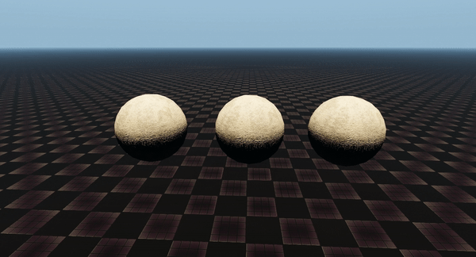
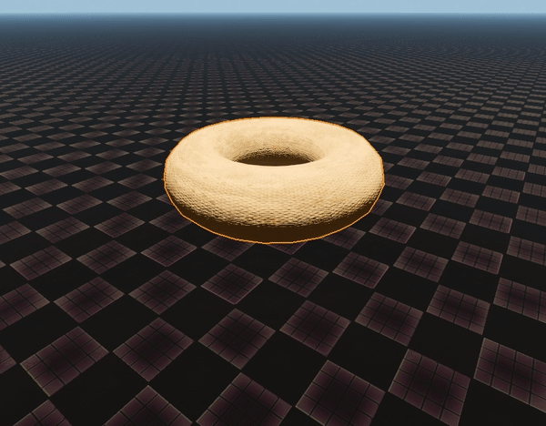
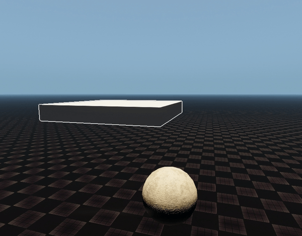

Overview
This feature adds support for closed (watertight) cloth with internal pressure that changes based on the current volume. It also supports lighter-than-air objects (generally, any configuration of Density/Density Inside/Mass), and enables/tightens up the simulation of unattached cloth.
Pressurized cloth is different from 3D-lattice based softbodies; since it's only a shell, it's harder for it to maintain more complex shapes. However, this can be achieved to a certain degree by simply limiting the amount of simulated vertices. For example, a box mesh with tessellated sides will likely turn into a sphere under pressure, but if it only has corner vertices, it will remain a box).
The simulation of the cloth is mapped 1-1 to the render geometry (without duplicated vertices), while softbodies use lattice skinning and therefore have a more complicated asset pipeline. Generally, cloth tends to be more stable and robust, and not prone to the tetrahedra flipping issue of the lattices.
It is highly recommended to use a Mass Decay of 0 on pressurized objects, since they are normally unattached, and mass decay redistributes masses based on distance from attachments (which on unattached objects can be created if they are grabbed with the physics tool, for instance). Hardness can be used to tweak the elasticity of the shell.
Although it is not mandatory for the cloth to be closed, volume computations can yield unpredictable results for non-closed meshes.
For Terrain Collisions the corresponding checkbox will have to be enabled (it's off by default), and Friction will probably need to be increased from the default 0 for realistic results.
Both of these options can be changed in the Properties of the entity component.
Examples
To illustrate how this feature can be used, here are some examples, with pressure values in the 10-80 range (smaller values on the right):

Different pressure values
Different Shapes
It is possible to use shapes other than a sphere or box, like the torus shape below.

Torus shape
Lighter than Air
This feature makes it possible to easily create a balloon effect, making an entity float into the air.
For this to work, Density Inside should be less than that of the outside air (which is 1 by default), and the resulting buoyant force (which is (outside_air_density - inside_air_density)*cloth's_volume) should be large enough to lift the cloth's mass.

Lighter than air
Usage
- Go to Create Objects → Empty Entity and drag it into the level.
Alternatively, you can add an asset you've created yourself by dragging and dropping it into the Asset Browser and then into your level.
Make sure its physics mesh is the same as its render mesh and that it is closed.
- With this entity selected, in the Properties, click on + Add Component and choose Physics → Cloth.
- Set the model by clicking the folder icon next to the File field, and selecting the file in the Asset Browser window that appears.
- Tweak the related parameters to achieve your desired result (Density Inside, Hardness, Mass, Mass Decay, Pressure).
In Code
In pe_params_softbody in the physics interface, members are exposed to script via density_inside (note that the reference air density is 1), pressure, and pressure_speed, which makes them automatically available in Flow Graph nodes Physics:SetParams and Physics:Params:Cloth.
Limitations
Currently, cloth objects cannot collide with themselves or ropes. Also, ropes can't be attached to cloth. Cloth can be attached to rigid bodies and the like, although the force transfer will be one-sided - rigid bodies can affect cloth, but not vice versa (unless the cloth object has an internal "rigid core", but the rigid core is only created automatically at the moment, and only for lattice-softbody objects).
Like all cloth, pressurized close buoyant cloth needs a non-primitive mesh with 1-to-1 correspondence between the render mesh and the phys proxy (i.e. phys proxy will have to be exported as "default" in CryExporter, not "proxy").
Unlike normal cloth, this type of cloth doesn't have to have vertex colors to mark attached vertices, since it can be unattached.